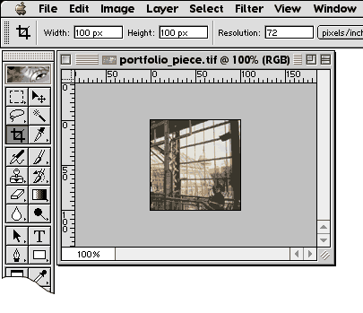

Home : Week 5 : Making Thumbnails
On your zip disk you will want to create a set of folders. These folders will eventually hold all of your portfolio materials for the website.
Open an image for your portfolio in Photoshop.
First we will format the "full-sized" image, which will appear on its own page in the portfolio.
Select "Image Size" from the "Image" menu.
Set the width of the image to 500 pixels. This width should be large enough to see detail in the image, but not be too large for small monitors, or take too long to download.
Click "OK." Your image should appear smaller on the screen.
We will save this image as a JPG for use on the web.
Choose "Save For Web" from the "File" menu.
Make sure the format is set to "JPEG" and the compression is adjusted so the file isn't too large, but still looks good. 30K is a good target file size.
Make sure to save this file in the "images" folder you created.
Add an "_f" to the end of the file name, so you know this image is the full sized version.
Now we will make the thumbnail image, used as a link on the portfolio's home page.
Select the Crop Tool.
Set the Crop Tool to create a 100 pixel square image, at 72 dpi.
Crop the image. Choose an interesting section of the image to work with.

This technique will make all of your thumbnail images consistant, which will be more visually appealing on your home page.
Save the thumbnail for web (File: Save For Web). Make sure JPEG is the selected file format, and the quality is adjusted appropriately. 4K is a good target file size.
Save this thumbnail image in the images folder with the first image. Add an "_t" to the end of the file name to distinguish it from the full sized image.
Once the thumbnail image is saved, close the image you've been working with. Choose "Don't Save." You do not want to modify your original image.
Repeat all of step two above five more times to create a set of 6 images with thumbnails, for a total of twelve images saved in your images folder.
Keep this work in a safe place. You will need it to complete the project.